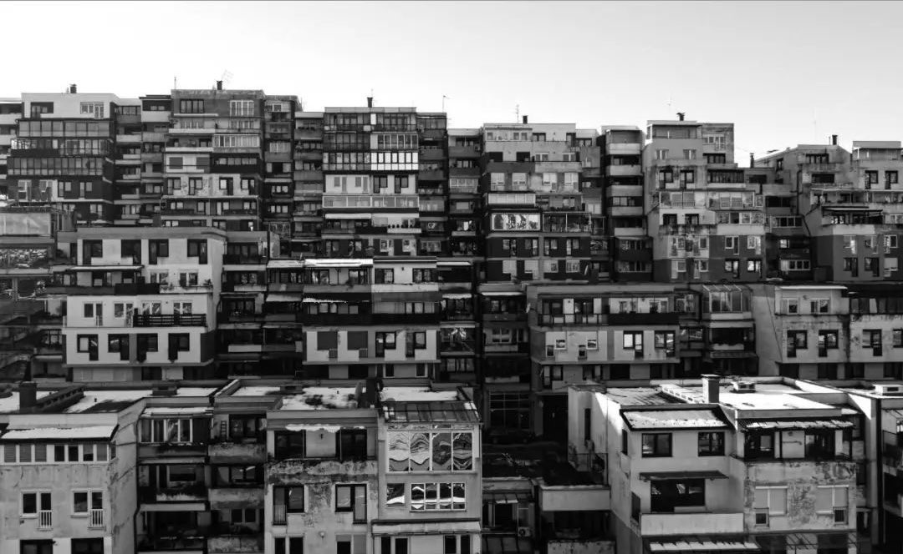

Graphic DesignGrafički dizajn
Music Cover ArtDizajn muzičkih cover-a
A collection of music cover designs created for tracks by artists from the Balkan music scene. Each design explores a different visual direction, combining imagery, composition, and typography to complement the identity of the music and the artists behind it. Kolekcija dizajna muzičkih omota za pjesme izvođača s regionalne muzičke scene. Svaki dizajn donosi drugačiji vizuelni pristup, kombinujući fotografiju, kompoziciju i tipografiju kako bi se uklopio u identitet muzike i izvođača.

